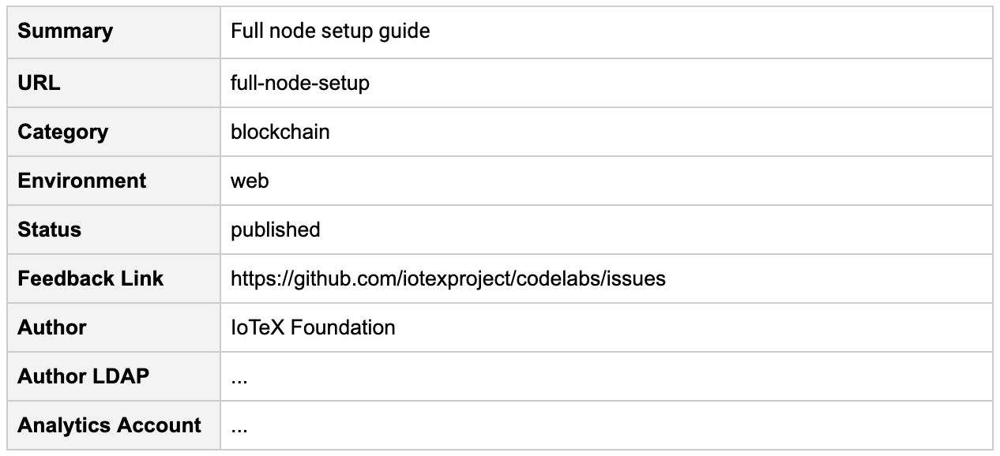

Last Updated: 2019-07-24
This codelab serves a guide on how to contribute your own IoTeX product related codelab.
Codelabs are hands-on interactive coding tutorials developed by Google. Claat (Codelabs As A Thing), the tool used to build them, is open-sourced, and as such, anyone can create their own codelab and contribute to the community!
Follow the instructions provided by Google here.
If you are on mac, the easiest installation is through golang:
$ brew install go $ go get -u -v -x github.com/googlecodelabs/tools/claat
Setup environment variables:
$ export GOPATH=$HOME/Go $ export GOROOT=/usr/local/opt/go/libexec $ export PATH=$PATH:$GOPATH/bin $ export PATH=$PATH:$GOROOT/bin
Verify installation:
$ claat -h
Codelab contributions will be added through pull requests. Create a fork of the codelabs repository and add a branch of your choice. This guide about open-source contributions may be helpful.
There are two methods of formatting codelabs:
Google Docs is recommended, as it offers easy methods of previewing your work, however both work as intended. Follow the syntax and formatting conventions outlined by their respective format documents.
The codelab metadata consists of a summary, url, category, environment, status, feedback link, and analytics account.
You can set each of these fields to whatever you want, however for category, environment, and status, url, please adhere to the standards outlined below:
For example (Google docs):

WIth Google Docs, there are two ways of previewing your codelab:
Navigate to your fork's branch's codelabs directory:
$ cd codelabs
Next, use claat to build your Google Doc or Markdown file.
Google Doc:
$ claat export docid
Your docid is the long string near the end of the URL (right after docs.google.com/document/d/)
Markdown file:
$ claat export file-name.md
You should see a folder created titled the metadata url that you defined in the source file. Within that folder is the static html website and json file containing metadata generated by claat.
To preview your codelab, call claat serve:
$ claat serve
This will create a local server to host your static website.
The claat generated static html website uses Google's codelab theme, however in IoTeX Codelabs, we use a custom theme that adheres to IoTeX colors.
To change to the IoTeX theme colors, open the static html file in the code editor of your choice
You should see something like this:
<!doctype html>
<html>
<head>
<meta name="viewport" content="width=device-width, minimum-scale=1.0, initial-scale=1.0, user-scalable=yes">
<meta name="theme-color" content="#4F7DC9">
<meta charset="UTF-8">
<title>Setting up a full node</title>
<link rel="stylesheet" href="//fonts.googleapis.com/css?family=Source+Code+Pro:400|Roboto:400,300,400italic,500,700|Roboto+Mono">
<link rel="stylesheet" href="//fonts.googleapis.com/icon?family=Material+Icons">
<link rel="stylesheet" href="https://storage.googleapis.com/codelab-elements/codelab-elements.css">
...Replace the Google stylesheet link with the IoTeX stylesheet link:
Original:
<link rel="stylesheet" href="https://storage.googleapis.com/codelab-elements/codelab-elements.css">New:
<link rel="stylesheet" href="../style/codelab-elements.css">Push your new files to your forked branch and create a pull request. We will review your pull request soon!
Thank you for contributing!